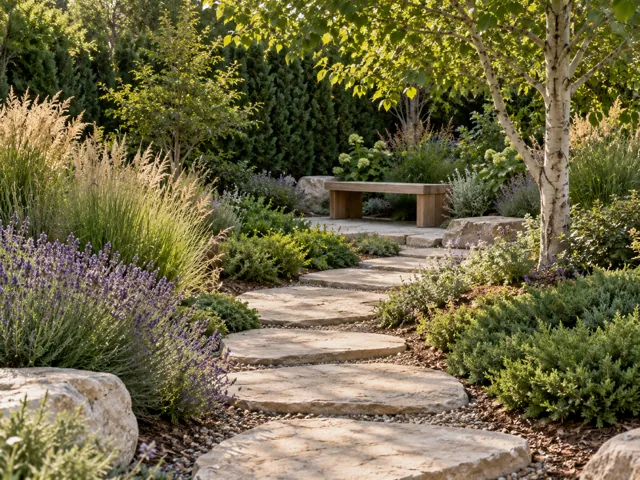

LANDSCAPE & YARD CARE
Greenleaves Landscape
Landscape installation and yard care in Taylorsville
Greenleaves Landscape handles planting beds, sod, pavers, sprinkler systems and seasonal yard cleanup in Taylorsville. Share your project and ask about the work.

A little care.
More from your outdoors.
Landscape installation and yard care in Taylorsville
Discuss your project ↗Picture your
work here.
A dedicated space for your own project photos, captions and before-and-after images.
Photo layout preview · Awaiting your imagesMake the finished work part of your first impression.
YOUR PHOTOS. YOUR CRAFT.Planting, materials
and outdoor space.
Share your priorities for the yard, the areas that need attention and any plans you have. Discuss scope, materials and an estimate.
Discuss your project ↗Discuss the work.
Plan the next step.
Share your outdoor plans.
Describe the yard, the areas that need attention and how you would like to use the space.
Define the project.
Talk through the planting, materials, maintenance needs and your priorities for the budget.
Plan the work.
Confirm the scope, estimate, seasonal considerations and proposed timing.
A few helpful
answers.
A little detail makes it easier to talk through the work you have in mind.
Ask about your projectCan I start with one part of the yard?
Describe the area you want to focus on and your priorities. Ask whether it can be treated as a separate project or planned as one phase of a larger update.
What helps with a landscape estimate?
Share the property location, approximate size of the area, access details and the changes you have in mind. Mention any preferred materials or budget range.
Should I ask about ongoing maintenance?
Yes. Discuss the care that proposed planting and materials may need. If you are looking for recurring yard care, confirm the available services and visit schedule directly.
Discuss your
landscape project.
Call us ↗Your yard priorities, an idea of the space and any material or planting preferences are a useful start.